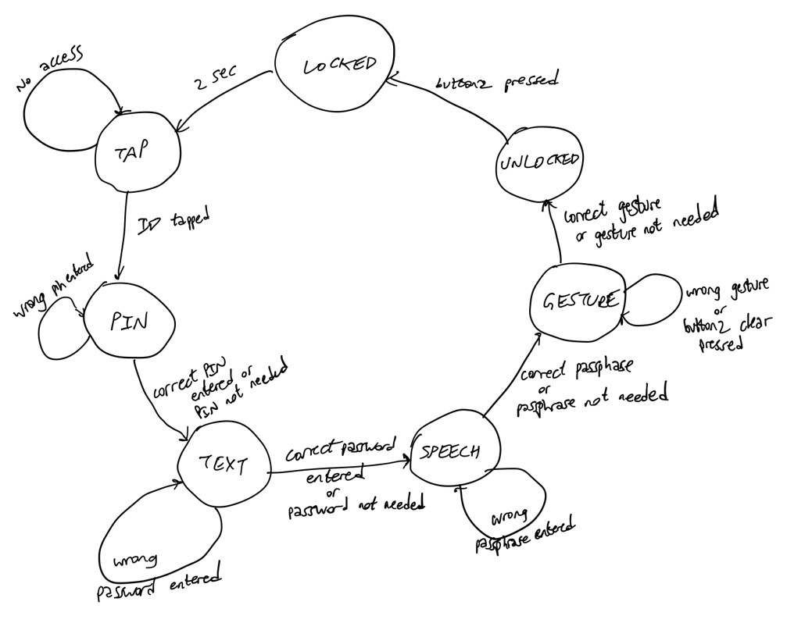
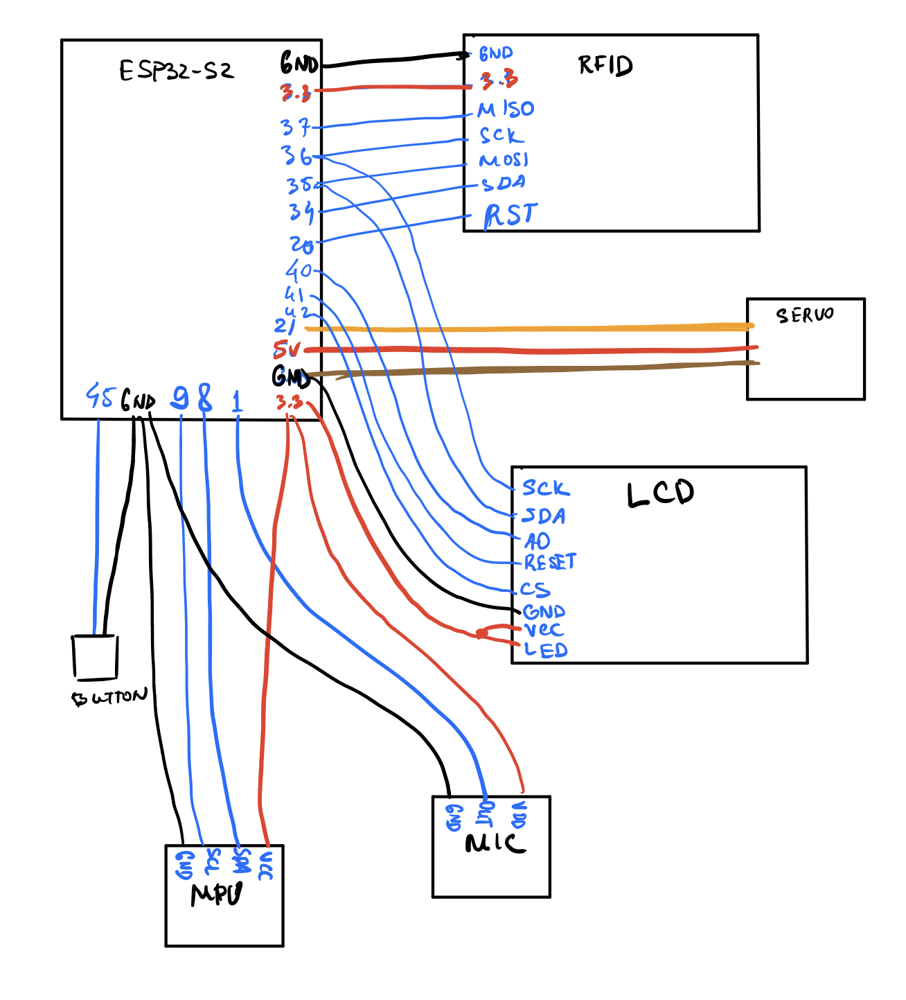
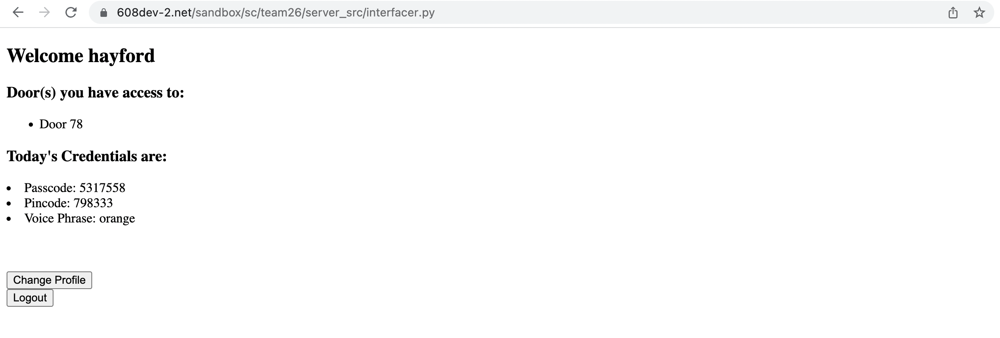
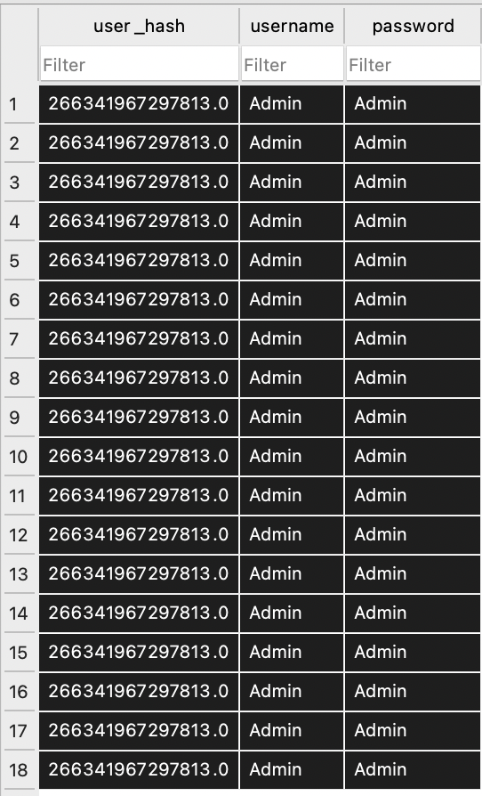
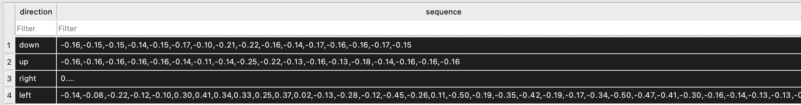
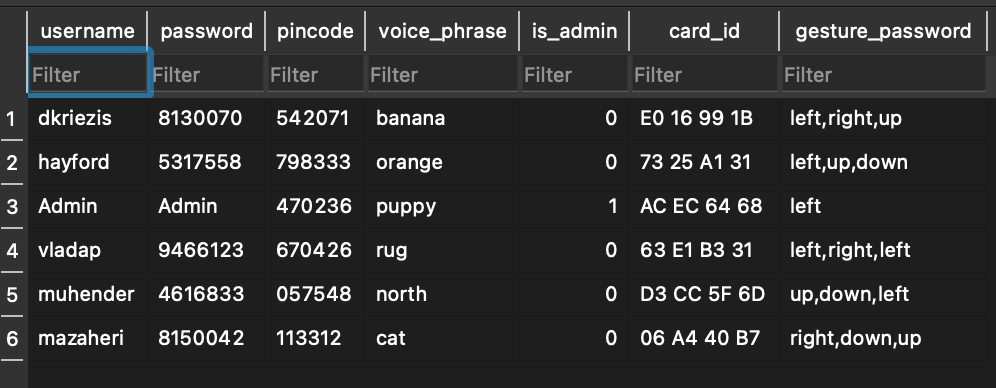
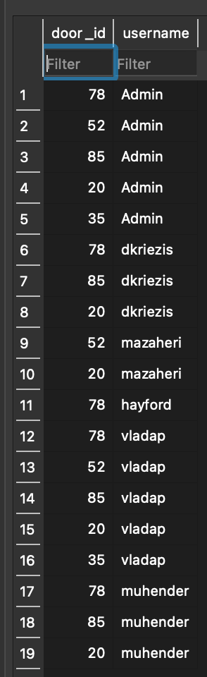

**SmartSecuritySystem - Final Report**
Our Smart Security System aims at making your home more secure. You might have seen in the Incredibles movie
Edna Mode entering a sequence of passwords in order to enter into her high security costume testing room and show Elastigirl the costumes she had designed for her family. What our project
tries to achieve is something very similar. In order to get access to a door, you need to go through several security layers
to verify that you are eligible for access.


Overview
===============================================================================
As mentioned briefly in the introduction, the goal of our project was to design a multi-layer security system for accessing doors.
More specifically, our system has the following security layers: the user first taps their card or fobs on an RFID
scanner. Upon tapping the card, the system will either accept or reject the card. If the card is rejected, then the user cannot enter the door.
If, however, the card is accepted, then the user will be prompted to go through the next layer of security, which is entering a passcode. If the user enters
the correct passcode, they will move to the next security layer, which is speaking a passphrase to the microphone. Once they get authenticated, they will move to the final
security layer which is moving the esp in a certain pattern. Once they have gone through all of these security layers, they get access to the door, and the door opens.
It is important to note that each passcode is chosen by the user themself by accessing our website, where they can change and see their passwords, as well as which doors they have access to.
Additionally, our system supports an additional user, the Admin that has access to all the doors, and can assign and remove
access for the users from different doors.
Documentation
===============================================================================
## State Machine Diagrams

## Block Diagrams

## Other Hardware used
Aside from the base sensors used in throught the 8 first weeks of this class, we also used the following hardware.
### RFID-RC522
As one of our security levels we needed to use an RFID so that a user can use his id card to open the door.
As a result we ordered 5 RFID-RC522 for a total cost of $27.45
### Servo
We were also provided by the staff with a servo in order to open a door.
Server Side
===============================================================================
## Interfacer
The interfacer.py is interactive page for the user on the website. This file is where GET and POST requests are accomplished. It's
also the file that calls all the authentication processing that needs to be checked before the username is granted access to the
webpage.
For first time login, a login form is returned to the user to fill. The user enters their username and password and click submit for
the credentials to be verified. To verify the credentials, authenticate_login is called with the username and password. If the result is
returned to be True, then the user's webpage showing the doors they have access to, their credentials for logging into the security system
on the ESP, and the option to their profile. However, if the result is False, the appropriate message is shown to the user.
Below is an image of what is shown on the webpage upon login:

The interfacer gives an extra layout for an Admin. Upon logging as an Admin, this user can enter Admin mode and decide who has access
to which door.
## Sessions
We started by implementing sessions which allows the user to come back to the website already logged in with their credentials. This was
being done by storing a universally unique identifier (UUID) from which the user accessed the webpage, username, and password. When a get request
is made from the user, we check if that UUID has been seen before or not. If it has, we retrieve their session information from the database.
However, we run into a problem where multiple users could not be on the webpage as the concurrently. This is because the code (shown below) that was used to generate the UUID
for each user was providing the unique identifier for the server.
~~~~~~~~~~~~~~~~~~~~~~~~~~~~~~~~~
def get_id():
"""
This function returns the unique id for the computer the user uses
"""
return hash(uuid.UUID(int=uuid.getnode()))
~~~~~~~~~~~~~~~~~~~~~~~~~~~~~~~~~
A different approach was introduced to still allow the user to return to their session when they have not logged out. This was achieved by
using a localStorage. Each new login stores the user's username and password. Then for each new GET request, their localStorage is checked
if there is a username and password already stored. If so, these information are used to retrieve the user information on the database and
will not be prompt to log in until they log out, where their localStorage is cleared.
## Authentication
All the server APIs that are used by the ESP are handled in `server_src/authentication.py` file. Below is the specification for all these API requests which can all be accessed at [here](https://608dev-2.net/sandbox/sc/team26/server_src/authentication.py):
- checkAccess&username=< username >&door_id=< door_id > => returns True if the user has access to the door, False otherwise
- checkAccess&card_id=< card_id >&door_id=< door_id > => returns True if the user with the given card_id has access to the door, False otherwise
- getUsername&card_id=< card_id > => returns the username of the user
- getAuthenticationMethods&username=< username > => returns the list of authentication methods the user is using as: "password=&pincode=&voice=&gesture="
- authenticate&username=< username >&password=< password > => returns true if the password matches the username
- authenticate&username=< username >&pincode=< pincode > => returns true if the pincode matches the username
- authenticate&username=< username >&voice_phrase=< voice_phrase > => returns true if the voice phrase matches the username
- authenticate&username=< username >&gesture=< gesture > => returns true if the gesture matches the username
- => returns "Unsupported Request" otherwise
The main code that handles these requests can be found in `request_handler()` function of the file. This function makes use of other helper functions that help respond to the API queries:
~~~~~~~~~~~~~~~~~~~~~~~~~~~~~~~~~
def authenticate_login(username, password): # Given username and password, checks whether the credentials match
def authenticate_pincode(username, pincode): # Given username and pincode, checks whether the credentials match
def authenticate_voice_phrase(username, voice_phrase): # Given username and voice phrase, checks whether the credentials match
def authenticate_gesture(username, gesture): # Given username and gesture, checks whether the credentials match
def get_credentials(username): # Retrieves all credentials of the user (including password, pincode, etc.)
def retrieve_username(card_id): # Given a card id, returns the username of the user with that card id. Returns None if the card id is not recognized.
def get_authentication_methods(username): # Given a username, returns the list of enabled authentication method of that user in the following format:
# "password=&pincode=&v..."
def checkAccess(username, door_id): # Given a door id and a username, checks whether the given user has access to the given door
~~~~~~~~~~~~~~~~~~~~~~~~~~~~~~~~~
All of the functions above are short few-liner functions that make a request to database, to see if the given credentials match etc.
## Database Requests
The database request file is the access point for all requests that need access to the
databases used in this project. It contains requests on the following databases:
- session_db -- used for storing the user_hash, username, and password
- door_access_db -- used for storing the username and associated door_id
- database -- used for storing username, password, pincode, voice_phrase, is_admin, card_id, and gesture
The prominent request that the database_request processes is getting the user's door accesses. The function, shown below, illustrates
how given the username, the doors that the user has access to is retrieved and returned as string in an html format.
~~~~~~~~~~~~~~~~~~~~~~~~~~~~~~~~~
def get_user_door_access_input(username):
"""
This function takes in a username and returns all the doors that the user has access to as
an html checkbox type
"""
door_data = []
with sqlite3.connect(door_access_db) as c:
door_data = c.execute('''SELECT door_id FROM door_user_table WHERE username = ?;''', (username,)).fetchall()
allowed_doors = set()
for door_id in door_data:
allowed_doors.add(door_id[0])
door_list = f''''''
return door_list
~~~~~~~~~~~~~~~~~~~~~~~~~~~~~~~~~
Other functions that are called in used in the project include:
- get_all_doors
- remove_door_access
- add_door_access
- check_admin
These functions allows processing information back and forth between the server, ESP, and webpage more efficient and collision-free.
## Data Driven Side of the project
This project involved incorporating data to decide what works and what doesn't. For example, even though we logged in on our personal computers, we
realized that the user_hash was the same, and this made us realized that storing user session on the server will not be the better approach of
getting sessions on the website. The image below shows the user_hash of Admin logged in multiple times on different laptops but having the same user_hash:

This led to using localStorage in storing sessions on the user's personal browser instead on our server. This led to a working access to
multiple users on the server.
Again, in order to decide which acceleration values correspond to different gesture movements, we stored the direction and sequences that made us
know which treshold value to use as right, left, up, or down. The database below show the sequences that we used in training our model to determine
directions

With this training model in place, we were able to assign different gesture_password to the users we have on the server:

We also used our database to store the door access given to each user on the user. This allowed to admin to modify and control who
has access to which door. This helped in controlling the security and safety of the authorized users on the server:

## Admin
The purpose of the admin page is to let the admin give and remove access of users from certain esps.
To get to the admin page we use an html button of type submit, that when pressed sends us to another file called admin.py.
### Displaying Board Access
To display which esps each player has access to we do the following.
First we get all usernames for the user table.
The we select all the boards from the doors_user_table, which will contain all boards, since admin has access to all of them.
Then for each username, we get all the doors that the username has access to from the doors_users_table and put them in a set called allowed_doors.
Then for each door in the system, we check if it belongs in the allowed_doors set, if it does we display it in the html with a filled checkbox, and if it doesn't we display it with an unfilled checkbox.
For each user, the checkboxes, corresponding to the each door belong to a single form, with a single submit button that when pressed, sends a post request with the information of this form.
### changing Board access
To change access, you check which doors you want to give access to and you un-check all doors you want to remove access from.
Once you have done that for a single user, then you have to submit the user's button that will send a post request it the admin.py page, to a update the access accordingly.
Once the admin.py page receives the post request, it first checks that the post request doesn't correspond to the post request for accessing admin.py from interfacer.py. Then, it gets the username of the user the changes were made for. Then, it removes access to all doors for this username by deleting in the table doors_users_table, all entries with username as username. Then it iterates over all keys in the post response, that are not a username, and gives access to username for this doors, by calling add_door_access which inserts into the door_users_table the door and the username, as shown in the code below.
~~~~~~~~~~~~~~~~~~~~~~~~~~~~~~~~~
for elt in request["form"]:
if elt != "username":
action = request["form"][elt]
if(action == "on"):
add_door_access(int(elt), username)
~~~~~~~~~~~~~~~~~~~~~~~~~~~~~~~~~
Finally, we have a button that when clicked sends us back to the interfacer.py page.
## Profile
Users can log in to the website and change their credentials: password, pincode, etc..
This is done in `profile.py` as follows:
~~~~~~~~~~~~~~~~~~~~~~~~~~~~~~~~~
new_password = request['form']['new_password']
new_pincode = request['form']['pincode']
update_credentials(username, password, {'pincode': new_pincode, 'password': new_password})
~~~~~~~~~~~~~~~~~~~~~~~~~~~~~~~~~
The `update_credentials` function in `authentication.py` then connects to the database and update the information accordingly:
~~~~~~~~~~~~~~~~~~~~~~~~~~~~~~~~~
def update_credentials(username, password, data):
# data is a dictionary. For now just write data = {"pincode": actual_pincode_value}
with sqlite3.connect(database) as c:
object = c.execute("""SELECT * FROM users WHERE username = ? AND password = ?""", (username, password)).fetchone()
if data['pincode'] == "":
data["pincode"] = object[2]
c.execute("""UPDATE users SET pincode = ? WHERE username = ? AND password = ?""", (data['pincode'], username, password)).fetchone()
c.execute("""UPDATE users SET password = ? WHERE username = ? AND password = ?""", (data['password'], username, password)).fetchone()
... #similarly for voice_phrase etc.
return "Password Updated Successfully"
~~~~~~~~~~~~~~~~~~~~~~~~~~~~~~~~~
## Gestures
### Getting training sequence and correlation of a sequence
A gesture sequence consists of a sequence of acceleration measurements.
Recognizing a gesture consits of two parts. The first one is training the default acceleration sequence against
which each gesture will be compared. We train one such sequence for each direction, up, down, left, right as described
in section 4.5 of this report, in the ESP side of the gestures functionality. The second one is checking the sequence entered
against all the default acceleration sequences for each gestures by computing their correlation.
The server receives any acceleration sequence as a string of accelerations separated by commas.
It removes the trailing comma at the end, and then splits at the commas, reverses the list, because the incoming
array is in reverse of the actual measurement sequence, and then joins the reversed list with commas.
In order for the server to distinguish between when it is receiving an acceleration training sequence, or an acceleration sequence it has to compare with we use two different POST requests.
When we pass the sequence to train, the request has the following parameters: training, username, and accel_sequence.
When we pass the sequence to compute the correlation, the request has the following parameters: check, direction, and accel_sequence.
When the server receives a request with the training parameter, it adds the acceleration sequence to the database. First I delete a sequence from that database for the same direction and then I update it with the new sequence.
When the server receives a request with the check parameter, it selects from the gestures databes the default acceleration sequence for the direction passed in the post request. Then it computes the correlation of the passed in sequence with respect to
the default sequence.
To compute the acceleration, we use the functions implemented in the regular exercises.
### Finding gesture from correlations
Once the correlation of a sequence against all the default gestures has been calculated, the esp sends a post request
to another server file, get_gesture.py, which finds the maximum correlation, and if that correlation is greater than a threshold of
0.3, it returns the corresponding gesture.
ESP Side
===============================================================================
## Password Chaining
The ESP works by first checking the card ID of the card by using an RFID scanner, and check if the person has access to the door.
If the person doesn't have access, it goes back to being locked. Otherwise, it moves to the next stage. This process is managed by the
MultiplePassword class, which makes different GET requests to each of the endpoints of the server API. One such method is:
~~~~~~~~~~~~~~~~~~~~~~~~~~~~~~~~~~
bool authenticate_by_pincode(char *username, char* pincode) {
char request_buffer[IN_BUFFER_SIZE]; // char array buffer to hold HTTP request
char response_buffer[OUT_BUFFER_SIZE]; // char array buffer to hold HTTP response
char body[200]; // for body
sprintf(body, "?authenticate&type=pincode&username=%s&pincode=%s", username, pincode);
request_buffer[0] = '\0';
sprintf(request_buffer, "GET https://608dev-2.net/sandbox/sc/team26/server_src/authentication.py%s HTTP/1.1\r\n", body);
strcat(request_buffer, "Host: 608dev-2.net\r\n\r\n");
response_buffer[0] = '\0';
do_http_request("608dev-2.net", request_buffer, response_buffer, OUT_BUFFER_SIZE, RESPONSE_TIMEOUT, true);
response_buffer[strlen(response_buffer)-1]='\0';
if(strcmp(response_buffer, "True") == 0)
pincode_authenticated = true; // somehow
return pincode_authenticated;
}
~~~~~~~~~~~~~~~~~~~~~~~~~~~~~~~~~
The program moves sequentially through pincode, password, voice phrase, and gestures, as a state machine. The states are maintained by an enum
~~~~~~~~~~~~~~~~~~~~~~~~~~~~~~~~~
enum Stage
{
LOCKED,
TAP,
PIN,
TEXT,
SPEECH,
GESTURE,
UNLOCKED
};
~~~~~~~~~~~~~~~~~~~~~~~~~~~~~~~~
If these passwords are entered correctly, the door is unlocked and the state machine moves to the UNLOCKED state. When the button 2 is pressed,
the machine moves back to the LOCKED state.
## Card Reader
We have connected the RFID such that its SDA pin is connected to pin 34 and its RST pin is connected to pin 20.
To communicate RFID we use the library MFRC522.h.
First we create an mfrc522 class that handles the communication with the RFID.
~~~~~~~~~~~~~~~~~~~~~~~~~~~~~~~~~
MFRC522 mfrc522(SS_PIN, RST_PIN);
~~~~~~~~~~~~~~~~~~~~~~~~~~~~~~~~~
Once a card has been read, we iterate over its userid tag to check that it is the same as the uid of one of the allowed cards, in the following way.
~~~~~~~~~~~~~~~~~~~~~~~~~~~~~~~~~
char cardcontent[1000] = "";
byte letter;
for (byte i = 0; i < mfrc522.uid.size; i++)
{
if(mfrc522.uid.uidByte[i] < 0x10){
strcat(cardcontent, " 0");
}
else{
strcat(cardcontent, " ");
}
char prefix[200]="";
sprintf(prefix, "%02X", mfrc522.uid.uidByte[i]);
strcat(cardcontent, prefix);
}
~~~~~~~~~~~~~~~~~~~~~~~~~~~~~~~~~
We first create a cardcontent variable to keep the userid of the card that was scanned.
We look at every byte of the user id which is in hex, and then we sprintf each byte in hex representation to a string, which we then add to the end of cardcontent. Depending on how large the byte is wes either add a 0 infront of its string representation or not.
Depending on whether the the resulting string after reading the card contents matches the stored user id, we proceed to moving to the next stage or not.
## Input Processor
Input processor can be initialized with a button `BUTTON` to listen on and a list of characters `CHARS` to scroll on:
~~~~~~~~~~~~~~~~~~~~~~~~~~~~~~~~~
InputProcessor(int BUTTON = 0, char * CHARS = nullptr)
~~~~~~~~~~~~~~~~~~~~~~~~~~~~~~~~~
This ESP-side class is designated to allow to enter text inputs easier on the board. The idea behind this mechanism is that the user would enter their password/pincode letter by letter and submit the result when done entering by **long** pressing a button. (given to the class contructor).
Choosing each letter is achieved by utilizing the IMU sensor on the board such that the user can scroll through the letters in order based on the acceleration of the board in the X axis. The user can then enter the shown character by **short** pressing a button and then move onto the next character.
~~~~~~~~~~~~~~~~~~~~~~~~~~~~~~~~~
void update(int x) // Given acceleration x in the X axis, updates the current character. It should repeatedly be called when the user is entering a value.
bool isValid() // Returns true if and only if the user has submitted their response and false otherwise. The user can restart the class by clicking the button.
char *getText() // Returns the submitted response of the user. Only access this if isValid() == true.
char *getCurrentText() // Returns the current response of the user (which is being edited). Used to display the current text that is being typed.
~~~~~~~~~~~~~~~~~~~~~~~~~~~~~~~~~
The scrolling functionality of the program is achieved by the following lines of code in the `update(int x)` function:
~~~~~~~~~~~~~~~~~~~~~~~~~~~~~~~~~
if (!valid) // Only scroll if the response hasn't been submitted yet
{
if (abs(x) > ANG_THRESHOLD && millis() - last_update > TIMEOUT) // Only recognize motion greater than a certain threshold
{
last_update = millis(); // Update timer
if (x > 0) // Update counter (the shown character)
counter++;
if (x < 0) // Update counter (the shown character)
counter--;
counter = (counter + CHAR_COUNT) % CHAR_COUNT; // Make sure counter is within the bounds
}
}
~~~~~~~~~~~~~~~~~~~~~~~~~~~~~~~~~
## Speech Input
This ESP-side class is designed to record and recognize passphrases from the user. The API for this class is very straightforward:
```cpp
void setup() // Should be called during the setup time of the ESP. Correctly initializes timer and secure wifi client.
char* run() // Returns a pointer to the string that the user recorded.
```
When `run()` is called, this blocking function starts recording what the user says for 5 seconds (in `record_audio()`). It then sends a request to Google speech recognition API and receives a response (these are all done under the hood in `speech_to_text()`). The resulting recognized phrase is then copied into a string and the pointer to the string is then returned.
The reason behind why this method is implemented as a blocking method is that during the 5 seconds that ESP starts recording the voice phrase, the ESP should not be doing anything else and it should only process the data from the microphone. Hence, the design choice for this function was chosen as blocking.
This code is mainly based upon the phrase recognition lab of the class and most of the code is based on the lab.
## Gestures Input
### Finding the "default" movement accelerations
To get the default acceleration sequence against which we will compute the correlation we do the following.
First of all we sample the x, y, z acceleration every 30 milliseconds.
Then we have connected a button to pin 45 that is a classy button as implemented in our regular exercise.
A long press of the button starts the recording of the acceleration data. A short press ends the recording and sends the sequence to the server to be stored on a database.
The way we start collecting data is the following. When we detect a long press we set a variable called measure to true.
If measure is true, we add acceleration data to an array called measurements.
~~~~~~~~~~~~~~~~~~~~~~~~~~~~~~~~~
if(measure){
char measurement[10]="";
sprintf(measurement, "%4.2f,", x);
strcat(str_measurements, measurement);
measurements[iter]=x;
iter+=1;
}
~~~~~~~~~~~~~~~~~~~~~~~~~~~~~~~~~
If short press, we stop measuring, do post request and reset measurements to empty.
In the json body each time we specify a different direction we change the direction part of the request as mentioned in the code snippet below.
Then we do the post request.
~~~~~~~~~~~~~~~~~~~~~~~~~~~~~~~~~
if (input == 1){
measure = false;
// manually change direction for each direction I try to learn
sprintf(json_body, "training=true&direction=right&accel_sequence=");
strcat(json_body, str_measurements);
// Doing post request here
~~~~~~~~~~~~~~~~~~~~~~~~~~~~~~~~~
### Capturing an esp movement
To capture a movement with the esp we do the following. We have an array called left_sequence, right_sequence, ...
That has the length of the default sequence stored in the database for each movement.
We update each of these arrays in a way similar to the running average example. Everytime we sample a
new acceleration measurement, we add it to the front of the array, and remove the last element of the array.
When we press a short click we send the current state of each sequence to the server to compute the correlation of each direction gesture with the inputed sequence. More specifically, we send a separate post request for each direction, and get the correlation of the stored sequence with respect to the default sequence.
## Servo
The servo is connected to pin 21.
The purpose of the servo is to open and close the door as demonstrated in the video in this google drive.
The servo operation is handled by the operate_door function.
If the door is open and the button has been pressed to close to board, we rotate the servo as shown in the code below, by gradually changing its position, and then set the door to be closed.
~~~~~~~~~~~~~~~~~~~~~~~~~~~~~~~~~
for (pos = pos_max; pos >= pos_min; pos -= 1) { // goes from 180 degrees to 0 degrees
ledcWrite(pwm_channel, pos); // tell servo to go to position in variable 'pos'
delay(50); // waits 15ms for the servo to reach the position
}
doorOpen = !doorOpen;
~~~~~~~~~~~~~~~~~~~~~~~~~~~~~~~~~
If the door is closed and the rfid authorizes access, door gradually opens, by doing the opposite from the above code, instead of pos-=1, we do pos+=1.
Weekly Deliverable Milestones
===============================================================================
## Week 1
### First iteration of server

### Text input pincode

### Working with RFID scanner

## Week 2
### Opening the door using card and text

## Week 3
### Admin Page and changing access

## Week 4
### Working with Sessions

Team Members
===============================================================================
* Demetrios Kriezis
* Hayford Akomeah
* Kasra Mazaheri
* Muhender Raj Rajvee
* Vlada Petrusenko